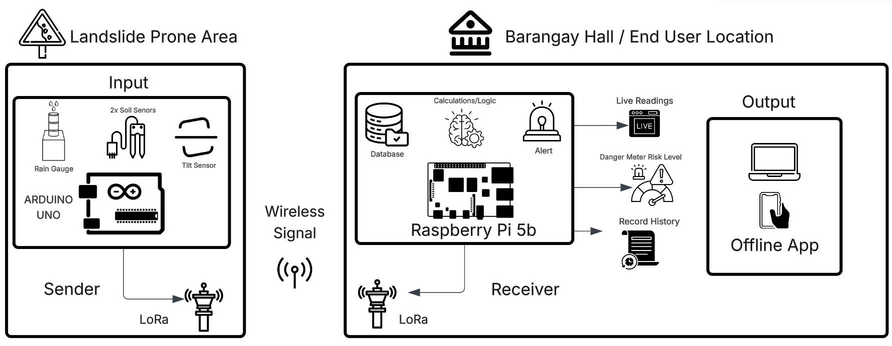

The vulnerability of mountainous terrains to landslides during heavy rainfall events necessitates the development of reliable early warning systems. Traditional monitoring often relies on manual observation or internet-dependent weather updates, which can fail during severe storms. This study addresses this gap by developing a localized, independent robotic monitoring system. By placing environmental sensors directly on the high-risk slopes and transmitting data to a secure base station at the Barangay Hall, the system provides a localized approach to disaster risk reduction.
General Objective:
The primary objective of this study is to develop and evaluate a Smart IoT-Based Landslide Early Warning System utilizing localized rainfall thresholds and machine learning algorithms for disaster risk reduction in Leon, Iloilo.
Specific Objectives:
Specifically, this study aims to:
The system architecture illustrates the flow of data from the landslide-prone area to the end-user location. As shown in Figure 1, the architecture is composed of the sender (Input) located at the mountain slope and the receiver (Output) situated at the Barangay Hall.

As depicted in the architectural diagram, the operational workflow begins at the Landslide Prone Area (Sender/Input). An Arduino Uno microcontroller continuously collects environmental data from an array of sensors, including a rain gauge for precipitation, two soil sensors for ground moisture, and a tilt sensor to detect slope movement. This raw data is packaged and transmitted wirelessly via a LoRa (Long Range) radio frequency antenna.
The wireless signal travels to the Barangay Hall / End User Location (Receiver/Output). Here, a matching LoRa receiver captures the data and feeds it into a Raspberry Pi 5b. The Raspberry Pi acts as the central intelligence of the system, storing the incoming information in a local Database and utilizing a Machine Learning logic engine to calculate the current risk level.
Finally, the processed data is outputted to an Offline App hosted by the Raspberry Pi. End users can access this application to view Live Readings, monitor the Danger Meter Risk Level, and review the Record History. If the calculated risk exceeds safety thresholds, the system automatically triggers an Alert, providing crucial time for evacuation.
The development of the system involved a selection of precise electronic components categorized by their location in the system architecture.
The system is designed for autonomous operation, requiring minimal technical interaction from the end-users at the Barangay Hall. The following procedures outline the standard usage of the system.
Upon providing power to the Raspberry Pi base station, the system will automatically boot and initialize the calculations, logic, and database. Concurrently, it will establish a local Wi-Fi access point (Offline App).
Users must connect their personal devices (smartphones or laptops) to the system's Wi-Fi network. Once connected, users navigate to the local IP address via a standard web browser to access the graphical user interface showing live readings.
The dashboard translates raw sensor data into actionable insights using a Danger Meter Risk Level:
The developed system demonstrates a practical application of IoT methodologies in disaster risk reduction. By providing an offline, localized, and highly autonomous early warning system, vulnerable communities are equipped with a crucial technological tool to mitigate the impacts of landslides and preserve human life.